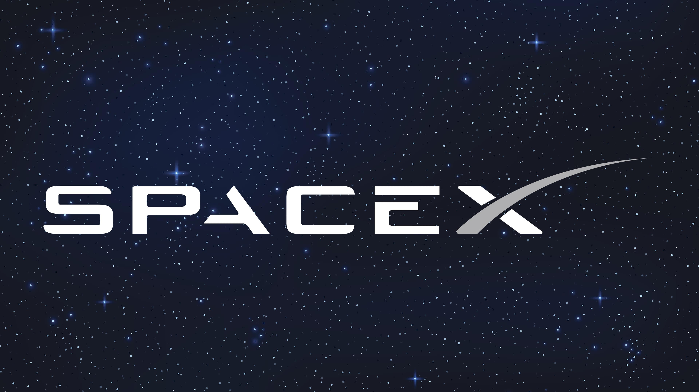

Space Exploration Technologies Corp.
SpaceX is an American aerospace manufacturer and space transportation services company headquartered in Hawthorne, California. It was founded in 2002 by entrepreneur Elon Musk with the goal of reducing space transportation costs and enabling the colonization of Mars.
Overview
SpaceX designs, manufactures, and launches advanced rockets and spacecraft. The company operates the Falcon 9 and Falcon Heavy rockets, and the Dragon spacecraft. SpaceX's ultimate goal is to make humanity a spacefaring civilization and a multi-planet species.
Key Achievements
- Falcon 9: First privately-developed liquid-fueled rocket to resupply the International Space Station
- Dragon: First commercial spacecraft to dock with the ISS
- Falcon Heavy: World's most powerful operational rocket
- Starship: Next-generation fully reusable super heavy-lift launch system
Current Projects
SpaceX is currently developing Starship, a fully reusable super heavy-lift launch system intended to carry both cargo and passengers on Earth-orbit, lunar, and Mars-orbit missions. The company also operates Starlink, a satellite internet constellation providing high-speed internet coverage globally.
Notable Missions
SpaceX has conducted numerous successful missions including crew rotations to the ISS through Commercial Crew Program, National Security Missions, and satellite deployments. The company continues to push the boundaries of space exploration through innovation and reusable rocket technology.